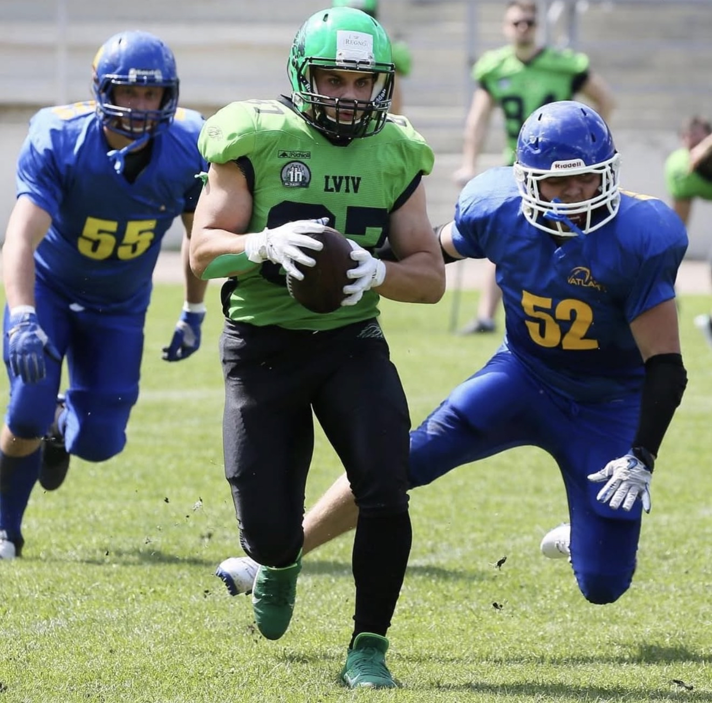
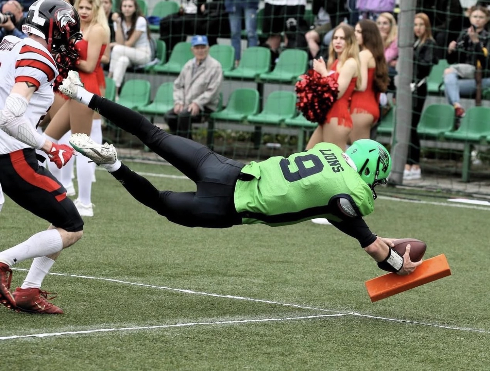
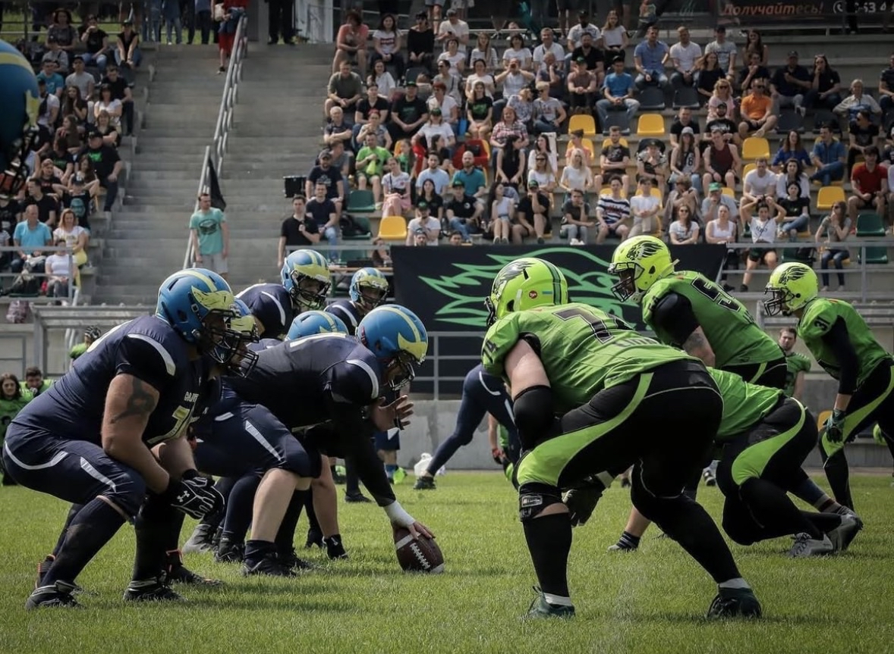
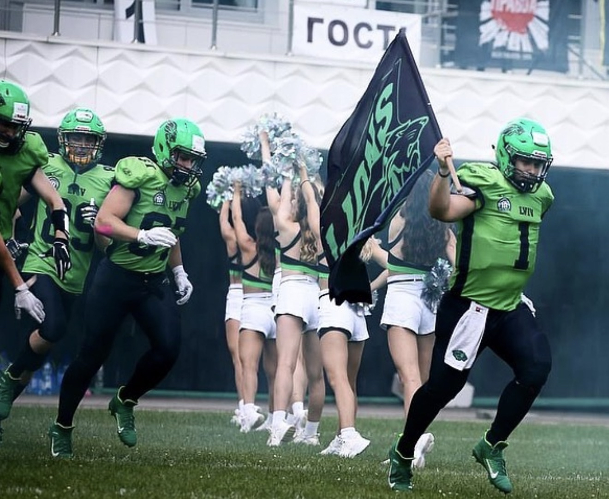
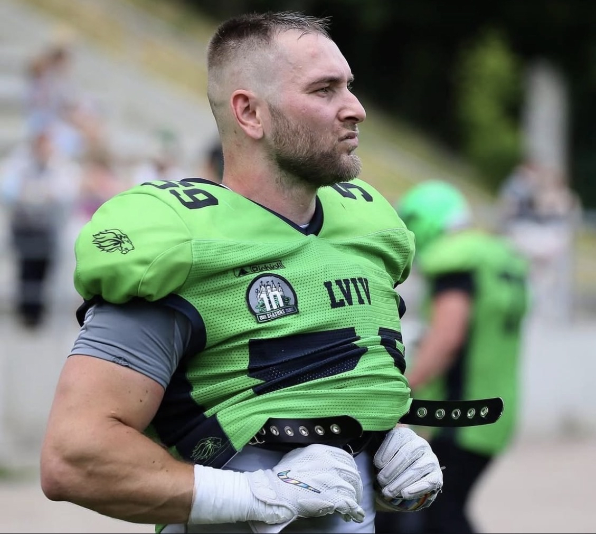
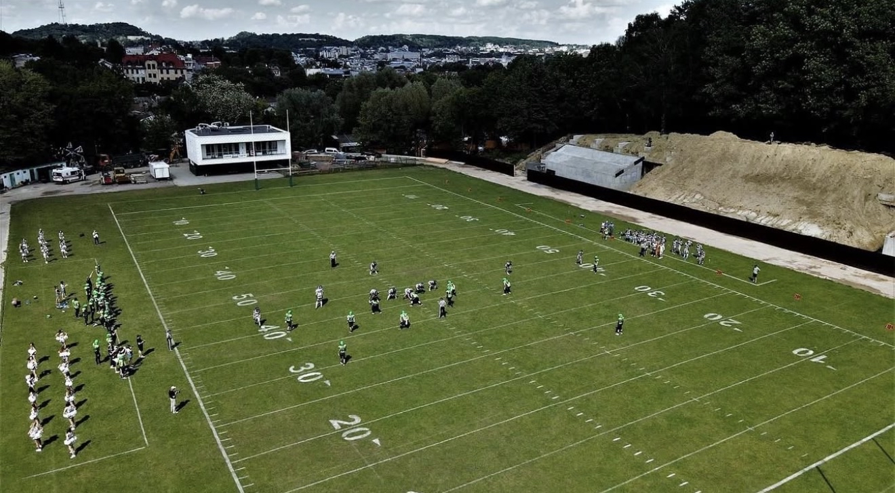
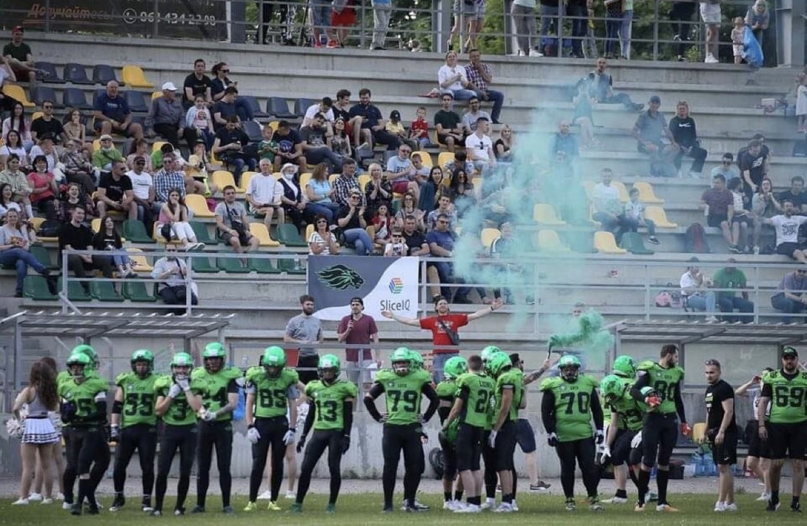
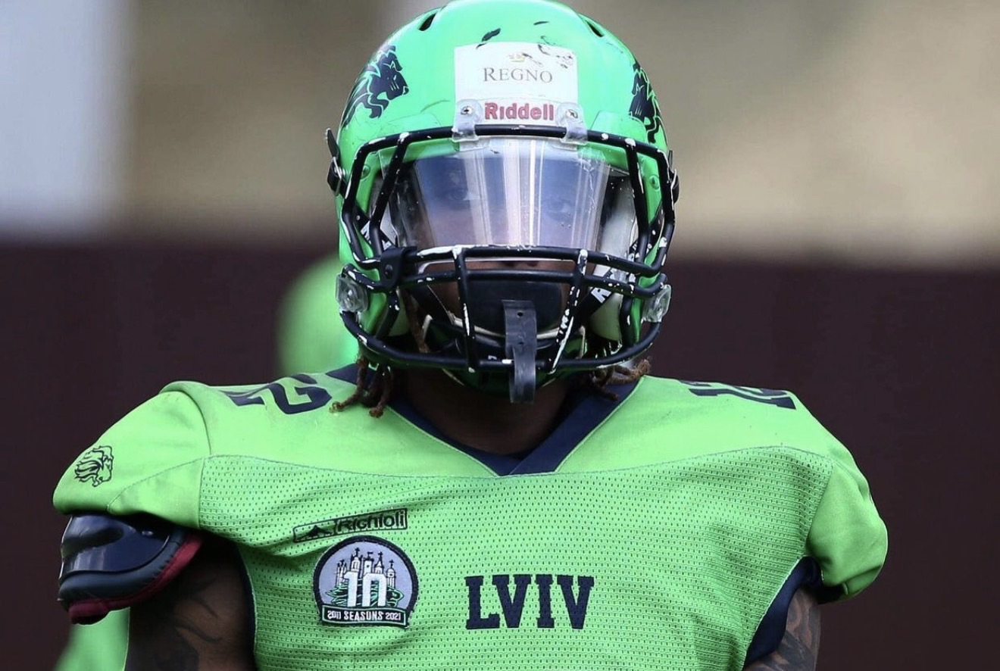
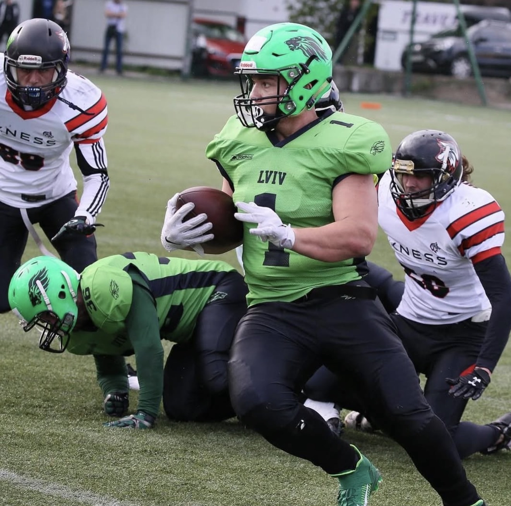

Американський футбол у Львові почав активно розвиватися у 2011 році, коли була заснована команда. Вона стала однією з перших, що популяризували цей вид спорту в регіоні, закладаючи фундамент для майбутніх успіхів і формування локальної спільноти.

Вже у 2012 році команда дебютувала в чемпіонатах України, швидко заявивши про себе як про конкурентоспроможний колектив. Гравці набиралися досвіду, а інтерес до американського футболу у Львові поступово зростав.

Починаючи з сезону 2015 року, команда виступала у Вищій лізі, а згодом і в Суперлізі — найсильнішому дивізіоні країни. Це стало підтвердженням стабільного розвитку та високого рівня гри.

За роки виступів команда неодноразово здобувала призові місця, ставши срібним та бронзовим призером чемпіонатів України. Гравці «левів» вважалися одними з найсильніших у країні.

Домашнім стадіоном команди була «Юність», де на матчі регулярно збиралися вболівальники. Іноді трибуни приймали близько тисячі глядачів, створюючи справжню атмосферу великого спорту у Львові.

Команда вирізнялася професійним підходом: у різні періоди з нею працював тренер зі США, а також виступали американські легіонери. Ростер налічував близько 40 гравців, а власна група підтримки додавала видовищності кожному матчу.

«Леви» активно подорожували Україною, граючи матчі від Одеси до Харкова, Києва, Вінниці та Ужгорода. Це сприяло популяризації спорту та зміцненню позицій команди на національному рівні.

Найпринциповішими суперниками були ужгородські «Лісоруби» — це протистояння стало справжнім дербі. Не менш напруженими були матчі проти київських «Capitals», з якими команда регулярно зустрічалася в одному дивізіоні та в плей-оф.

На жаль, через повномасштабне вторгнення розвиток американського футболу в Україні тимчасово призупинився. Логістичні труднощі та мобілізація гравців змусили клуби переорієнтуватися на розвиток флаг-футболу — олімпійської версії гри, щоб зберегти культуру спорту та продовжити його розвиток у Львові та по всій країні.